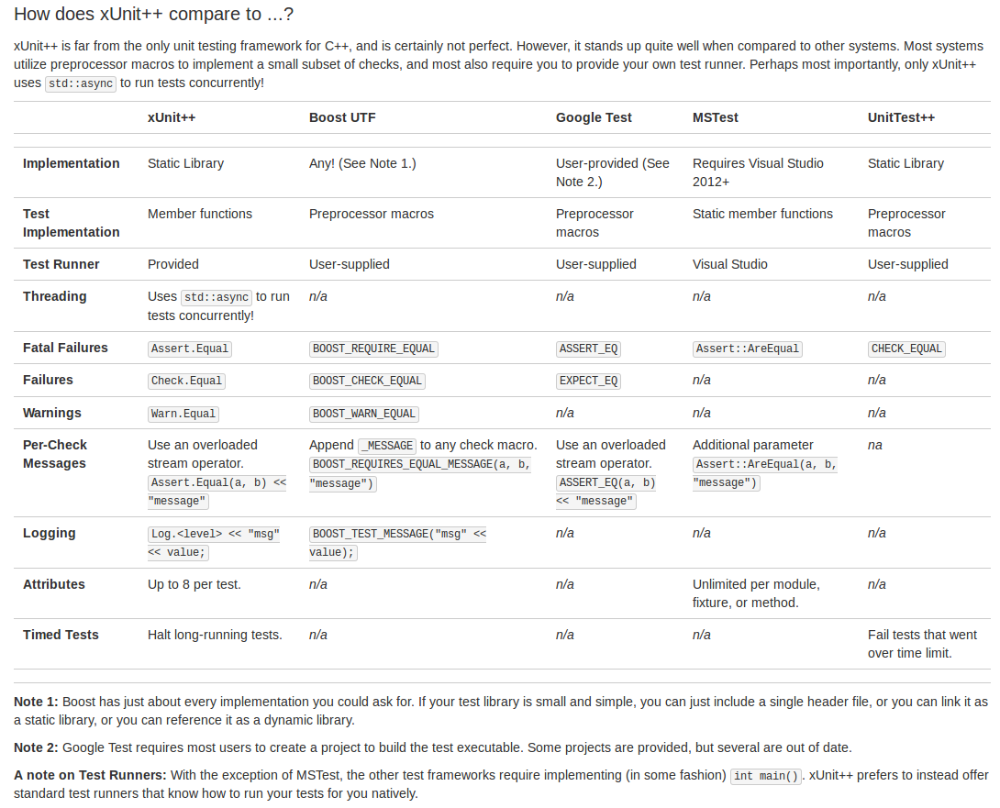

Unit Testing in C++: an Overview
Eirian Owen Perkins
CSCI 5828 - Presentation 2
Table of Contents
- Introduction and Motivation
- What is Unit Testing Anyway
- Unit Testing Terminology
- Selecting a Harness to Fit Your Needs
- Features under Consideration
- Summary of Features
- Discussion and Conclusions
Introduction and Motivation
- Unit testing is essential to software development[13]
- Enables developers to detect errors early on
- a form of white-box testing
- effective way to support test driven development
- unit tests can be seen as a "living document" that provide usage examples in context
- Inspect units, the "lowest" level of testing
Introduction and Motivation
- Detecting Errors Early: A business case[14, 15]
- Avoid damage to the company's reputation
- Boost sales
- Customer and consumer confidence
- Catching errors late in the development cycle (or after release) has a "cascading impact" on time and money spent
- A fix can be orders of magnitude more expensive if caught late
- Don't drive business to your competitors!!!
Introduction and Motivation
- White-Box Testing[13]
- "Deriving tests from the source code internals of the software, specifically including branches, individual conditions, and statements."
- Are the "guts" doing what we think they're doing?
Introduction and Motivation
- Test-Driven Development[16]

- Write tests based on acceptance criteria.
- Run the tests. Tests will not pass until proper code is written
- Update code
- Run the tests again
- Update code until all tests pass
- "Test-Driven Development = Refactoring + Test First Development"
What is Unit Testing Anyway?
- Unit Testing is...[13]
- The "lowest" level of testing
- No knowledge of the "encapsulating software application"
- The developer's responsibility
- Testing at the function, method, or module level
- Coverage metrics such as branch or statement coverage may be captured at this level
- Unit tests should be independent
- The result of a previous unit test should not affect a subsequent test
What is Unit Testing Anyway?
- Unit Testing is NOT...
- Integration testing
- testing a combination of modules
- Black-box testing
- testing without knowledge of the internals
- System testing
- black-box testing at the application level
- A bench test
- testing with software or hardware assistance, for instance with a simulator
https://en.wikipedia.org/wiki/Black-box_testing
https://en.wikipedia.org/wiki/Test_bench
http://www.tutorialspoint.com/software_testing_dictionary/system_testing.htm
https://en.wikipedia.org/wiki/Integration_testing
Unit Testing Terminology
- Test Case
- Test Suite
- Test Harness
- Mocking and Stubbing
Unit Testing Terminology
- Test Case
- An individual test. For example:
- Consider testing isPrime()
- isPrime(42) == FALSE
- isPrime(17) == TRUE
- These are both a test case evaluating isPrime().
https://en.wikipedia.org/wiki/Unit_testing
Unit Testing Terminology
- Test Suite
- A collection of test cases
Unit Testing Terminology
- Test Harness
- The software framework that runs test suites
Unit Testing Terminology
- Mocking and Stubbing
- Simulating some feature or piece of code
- For instance, returning a pre-defined string instead of querying a database
- Another example: returning some status from hardware that may otherwise be difficult to replicate
- Mocking is more in-depth than stubbing
Selecting a Framework to Fit Your Needs
- There is a large selection of unit testing frameworks available to C++ developers
- Narrowing down a list of frameworks is a task in and of itself
- The selections on the remaining slides were selected after reading reviews, recommendation, and discussions
- Noteworthy discussion: Exploring the C++ Unit Testing Framework Jungle
Selecting a Framework to Fit Your Needs
- Recommendation Preview:
- Boost Test
- Large community, rich feature set
- Google Test
- Large community, used in well-known projects such as the LLVM compiler.
- CppUnit
- Port of JUnit. Java developers may be reasonably familiar with this.
- CppUnitLite
- Stripped down version of CppUnit; recommended for embedded systems.
- xUnit++
- Newer project designed as an alternative to Boost Test and Google Test
Features under Consideration (I)
- Run subset of tests in the test suite
- Portable -- minimal dependencies
- Time-Related Support
- Supports different output formats? Consider XML
- "Good" assert functionality
- Supports non-fatal failures
- Supports fatal failures
- Handles exceptions and crashes well
Features under Consideration (II)
- Minimum work required to add new test suites
- Actively Maintained
- Clear, up to date documentation
- Mocking Capability
- Repeat test N times
- License
- Per-check message
Features -- Motivation
- Run subset of tests in the test suite
- Some test harnesses support running all tests or no tests
- Sometimes a developer would prefer to run a subset of test cases in a test suite
- Some tests may be long-running
- A developer may be interested in one test case at a time during test-driven development
Features -- Motivation
- Portable -- minimal dependencies
- What third party libraries are required for this test harness to run?
- The software application under development is probably deployed to multiple platforms or environments
- Developers should test their code in environments where the product will be deployed
- The development environment might change
- Dependencies may be come deprecated
- For this reason, portability in terms of minimal dependencies should be evaluated
Features -- Motivation
- Time-Related Support[8]
- Does the framework support timing-out tests?
- Report the time each test case took to run
- Report if a test exceeds some time limit
Features -- Motivation
- Supports different output formats
- Teams may want to run unit tests after automated builds
- Teams may want to run unit tests on a regular schedule (nightly, for instance)
- When either of the above are desired, it makes sense to send out email summaries
- How to summarize output? How to parse?
- Specification of a standard output format like XML is "nice to have" for these purposes
Features -- Motivation
- "Good" assert functionality
- Supports non-fatal failures
- Supports fatal failures
- Some test harnesses abort after a single test fails (fatal failure)
- Developers may want to continue running and see the total number of tests that pass/fail (non-fatal failure)
- Alternatively, if some critical function fails, there may be no reason to continue the test
- In that case, developers may want the test suite to halt
- Are both behaviors available? Quitting immediately(fatal) VS finish running tests (non-fatal)
Features -- Motivation
- Handles exceptions and crashes well
- It's reasonable to expect application code to throw exceptions
- Developers may even want to check that an exception was thrown
- The test suite should be able to handle this instead of dumping core
Features -- Motivation
- Minimum work required to add new test suites
- Software is continually growing. Developers will need to add new test suites for every module under test
- It should be trivial to add a new test suite
- Don't waste development time setting up boiler-plate code
Features -- Motivation
- Actively Maintained
- Avoid using deprecated software
- ...or software that has a high probability of becoming deprecated
- As we know, code always has defects
- Use a test harness under active maintenance
- Newer releases fix bugs
- Newer releases add features
Features -- Motivation
- Clear, up to date documentation
- Trying to figure out "how-to" with poorly documented software is a time-sink
- Unit test harnesses should help developers
- Developers must have adequate instruction on how to use the test harness
Features -- Motivation
- Mocking Capability
- Moot point, it turns out most frameworks will work with an outside mock library
Features -- Motivation
- Repeat test N times
- There may be good reason to run a test repeatedly
- Example from Hewlett-Packard: I had to run a single test 800 times in order to consistently reproduce a failure
- We saw plenty examples in class -- a developer may want to reproduce failure in a concurrent application that reproduces infrequently
Features -- Motivation
- License
- If the application under development is not open-source, do not use a third party library that requires your code to be open-source
- Your organization may not want to pay license fees, if any are required
- There are legal considerations
Features -- Motivation
- Per-check message
- Is a message generated for each test case in a test suite?
Summary of Features
| CppUnit | CppUnitLite | CxxTest | xUnit++ | Google Test | Boost Test | |
|---|---|---|---|---|---|---|
| Run subset of tests | not without modifying | not without modifying | yes | yes | yes | yes |
| Minimal Dependencies | Issues integrating with visual studio | yes | requires python | Requires GCC 4.7 or above | yes | Requires Boost Test library |
| Time-Related support | there exists an example | unsure | not that I found | Halt long-running tests, "inherently fragile" | yes | Time-out not available on Win32" |
| Different Output Format | yes | trivial to add more | yes | yes | yes | yes |
| Good Assert Functionality | all tests run or none do | all tests run or none do | all tests run or none do | yes | yes | yes |
| Handles Exceptions well | yes | no, must be added | yes | yes | yes | yes |
| Minimal work to add new suite | no | yes | yes | yes | yes | yes |
| Actively Maintained | not CppUnit2 either | other versions may be | yes | yes | yes | yes |
| Clear documentation | clear but not up to date | hardly any | yes | not really | yes | up to date but overly verbose |
| Repeat test N times | yes | not that I found | not that I found | not that I found | yes | test case must be specified N times |
| License | GNU LGPL | none in original version; various in modified versions | GNU LGPLv3 | MIT | BSD | Boost Software License |
| Per-Check message | no | no | yes | yes | yes | yes |
Discussion and Conslusions
- After the initial review, CPPUnit and CPPUnitLite seemed too limited, poorly supported, and too ill-maintained for further consideration.
- That being said, CPPUnitLite is great for development in embedded systems. In this context, CppUnitLite's best feature is arguably the fact it is so stripped down.
Discussion and Conslusions
- CxxTest, xUnit++, Boost, and Google Test were all easy to use, feature rich, and actively maintained
- CxxTest was by far the easiest framework to get up and running
Discussion and Conslusions -- CxxTest
- CxxTest was easy to set up and get running.
- No main() function must be defined
- Tests are written in header files
// MyTestSuite1.h
#include <cxxtest/TestSuite.h>
class MyTestSuite1 : public CxxTest::TestSuite
{
public:
void testAddition(void)
{
TS_ASSERT(1 + 1 > 1);
TS_ASSERT_EQUALS(1 + 1, 2);
}
};Discussion and Conslusions -- CxxTest
- After writing the test cases, the developer must run the cxxgentest parser to generate a .cpp file
- The .cpp file will have to be compiled before it can be run
- CxxTest was ported to Python from Perl. It has fewer limitations now than it did in the past
- For instance, older versions could not handle
#ifand#endifpreprocessor flags - Another example: multiline comments could not previously be parsed by CxxTest. Now it is possible if the user specifies
--fog-parseror-fon the command line.
Discussion and Conslusions -- CxxTest
- + CxxTest had many of the desirable features considered
- + CxxTest had the most thorough, easy to read, and understandable documentation out of any of the considered frameworks
- - Python 2.4-3.3 are supported, but 2.4 will no longer be supported in upcoming releases
- - CxxTest does not display the time spent running each test
Discussion and Conslusions -- xUnit++
- At first glance, xUnit++ looked as promising as CxxTest 
- Let's take a look at their self evaluation (from the xUnit++ webpage)
Discussion and Conslusions -- xUnit++
- Upon further inspection, I found their "how does xUnit++ compare to ...?" table somewhat irrelevant and misleading
- Including a test runner isn't much of an advantage